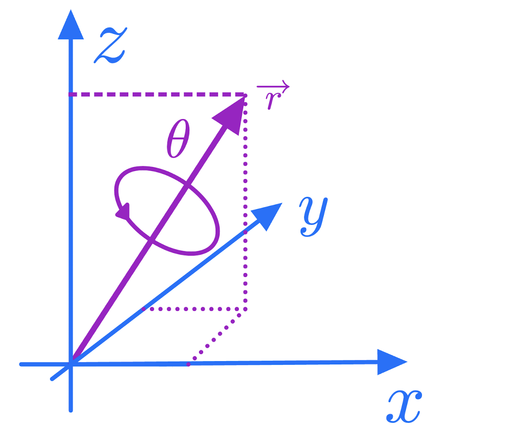

This is a primer on rotations and quaternions, as needed to describe rotations.
This is Work in Progress still need corrections.
1 A short note on rotations
In the figure, you can see a sketch of the situation for gesture recognition. We are interested in “the relative positions” between the palm and thumb on the one side and the laboratory system. As we will see this can be described in the framework of rotations.
Figure 1: Simplyfied gesture recognition with 2 IMUs (thumb, palm). Show are a fixed coordinate system in space (toothpicks on table), a body centered coordinate system on the thumb and one on the plam.
1.1 A first rotation
Before we go into some math, lets have a first look how a rotation might look like. On the left side you see data points in the original space. On the right side a rotation by 45 degrees around the z-axis that have been applied to the points. This rotation can be obtained by a rotation matrix R:
Left: orinial data. Right: data rotated by 45 degrees around y-axis (or coordinate system rotated by -45) degrees. The y-axis points up and the rotation is done in counter clock-wise manner
Code
#It's vector times Matrix for row-vectors#Therefore we have to transpose (R x) to x^T R^Tp3d(rabbit %*%t(R), h=NULL)
Left: orinial data. Right: data rotated by 45 degrees around y-axis (or coordinate system rotated by -45) degrees. The y-axis points up and the rotation is done in counter clock-wise manner
Code
par(mfrow=c(1,1))
1.2 Introduction
Rotations between rigid objects can be described as a linear transformation from one coordinate system to another, with the same origin. A first example is the bunny from above. Anexample of such a rotation is the orientation of your cell phone after you picked it up compared to the position on the table, or the orientation of the thumb in figure compared to the coordinate system of the palm. A very illustrative example is an airplane which is at \(t=0\) on the ground and is at \(t=t\) in the air. Besides the translation, the orientation of the plane at \(t=0\) relative to the plane at \(t=t\) can be described by a different heading (the yaw angle) obtained while taxing, the pitch angle obtained in the climbing phase and a rotation around the axis of flight the roll angle. During this phase many rotations can happen but they can all be summarized in a single rotation.
More formally the rotations between the two planes can be described by a rotation matrix \(R\) , which transforms the coordinate system of the plane at \(t=0\) to the coordinate system of the plane at \(t=t\). This matrix is defined by the transformation of unit vectors \(\vec{e_x},\vec{e_y},\vec{e_z}\) of coordinate system (say that at \(t=0\)) to a coordinate system \(\vec{e'_x},\vec{e'_y},\vec{e'_z}\) at \(t=t\). As my famous professor in linear algebra always repeated the columns of a (transformation) matrix are the images of the unit vectors1. So the first column of \(R\) is given by \(R \cdot \vec{e_x}\) second by \(R \cdot \vec{e_y}\), and the third by \(R \cdot \vec{e_z}\).
Important to note is that there are to directions the rotation (airplane in the fixed coordinate system like the tower, or tower in the coordinate system of the airplane) can go. Since the solution are so similar, this sometimes causes confusion.
1.3 Parameterization
1.3.1 Definition of rotations
Rotations can be seen as linear transformation from one coordinate system into another. But there are several way to parametrize them. The first is via a rotation matrix.
1.3.2 Rotation matrix
In principal a rotation is given by the 9 matrix elements of \(R\). However they cannot be arbitrary, they still need to describe rotations. What are the defining properties of rotations? It turns out that a rotation, has an inverse and the inverse simply the transposed \(R^{-1} = R^T\) (this is the orthogonality). Further, \(det(R)=1\) this is a consequence that the volume in the rotated system stays constant and also the orientation (it’s \(det(R)=1\) and not just \(|det(d)|=1\)). So in matrix notation a rotation is defined by
Multiplying two rotation matrices \(R_1\) and \(R_2\) is a again a rotation matrix, this is why rotations in 3D are also called special orthogonal group SO(3). Note that the order of rotations matter and \(R_1 R_2 \ne R_2 R_1\)
So it’s obvious that is over parameterized using 9 values and there are constrains on the \(r_{ij}\) so that eq. 1 is fulfilled.
1.3.2.1 Rotation-Matrices (“From To” pitfall)
When we condescend ourselves to the depth of matrix multiplication, the first of two pitfalls lingers around. This is due to the fact that matrix multiplication introduces an order. Say, we want to transform a vector \(\vec{f}\) from a “from coordinate system” into a vector \(\vec{t}\) given in coordinates of the “to coordinate system”. We can do this via:
\[
\vec{t}=R \,\vec{f}
\]
To go the other way around, use \(\vec{f}=R^{-1} \vec{t}\). The problem occurs with intermediate steps, for example when decomposing the rotation into several intermediate steps \(R=R_2 R_1\) then
TODO
It is handy to make the distinction, between rotations and transformations and think of one coordinate system as the world coordinate system or lab system.A transformation is defined as an operation, which leaves the points (in the world coordinate system) as they are and just moves the coordinate system. A rotation on the other hand, moves the points in the world coordinate system, see e.g.(Großekatthöfer and Yoon 2012). However, you might wonder why we break the symmetry and consider one coordinate system as fixed. Here is an explanation (taken from stackexchange)
The product \(AB\) of matrices is the effect of applying \(A\) after applying \(B\), simply because we write the “effect” of a matrix \(A\) on a vector \(v\) as \(Av\) (i.e., the convention is to work with column vectors). Thus \((AB)v = A(Bv)\) is \(A\) applied to \(Bv\). Note that this convention matches the usual notation for (nested) functions: \(\log(\sin(x))\) is the logarithm function applied to the result from applying the sine function to \(x\).
Of course, the rules for computing the product of matrices are just right for this convention. Or, if one wanted \(AB\) to stand for “first apply \(A\), then apply \(B\)”, one would use row vectors instead and write “A applied to \(v\)” as \(vA\) - which is very uncommon (and in effect just means that one works with the transposed matrices, relative to the usual convention).
Only transformations can be chained by the usual matrix multiplication. I don’t know how often I did this wrong.
1.3.3 Parameterization using elementary rotation.
Many repeated rotations are again a rotation (closure). Moreover it can be shown that an arbitrary rotation can be build out of three elementary rotations. Here the mess begins, there are many ways to define such as decomposition. For example one possibility is: First, a counter-clockwise rotation \(R_z(\alpha)\) around the \(z\)-axis by an angle of \(\alpha\). Second, \(R_x(\beta)\) rotates around “the new” \(x\)-axis and finally by \(R_z(\gamma)\) around the new \(z\)-axis. So the complete transformation is given by \(R(\alpha, \beta, \gamma) = R_z(\gamma) R_y(\beta) R_x(\alpha)\).
Figure 2: Animation showing the sequence $R_z(\gamma) R_y(\beta) R_x(\alpha)$ of elementary rotation. Taken from wikepedia
The individual transformations can be derived by looking where the unit vectors are transformed. In the figure below you see a derivation of the rotation matrix, we have an original system denoted by \(x,y,z\) and a system rotatated about \(\vartheta\) around the z-axis. We ask “how does the original system look like in the rotated one.”.
Derivation of the Transformation matrix transforming from a fixed coordinate system to a rotated one.
This transformation matrix transforms from the laboratory L system to the “body centric system” B. To make this clearer sometimes, expressions like \(R_{B \leftarrow L}\) are written (Großekatthöfer and Yoon 2012). For transforming points from the rotated system back to the initial system, we ask for the inverse transformation \(R_{L \leftarrow B}\) :“How does the transformed points look in the original system”. Luckily2 the inverse is the transposed and this corresponds to setting \(\gamma\) to \(-\gamma\) since \(\sin\) is asymmetric. So in this case we have for a rotation about say \(\alpha\) around the z-Axis.
When we rotated the rabbit, we rotated the data and not the coordinate system. So we have to use a rotation as \(R^z_{B\leftarrow L}(-\alpha)\) and with \(\sin(45^0) = \cos(45^0) \approx 0.7071\), we get:
which is same rotation as used in the code used to transform the data.
1.3.3.1 Ambiguities
The problem with the approach of elementary rotations is, that there are many (12) possible combinations to chain the elementary operations3. For example often used is the sequence \(R_{L \leftarrow B}=R^z(\gamma) R^y(\beta) R^z(\alpha)\) i.e. using \(R^z\) twice. This sequence is shown in the animation Figure 2
1.3.3.2 A worked out example (Yaw-Pitch-Roll)
Using an airplane, we know what happens (taxiing, take-off, rolling) and we can derive a nice chain of elementary rotations, which will serve as reference for later. First of all, we have to define the direction. We want a transformation that starts with coordinates in the lab frame, and transforms that into coordinate in the airplane frame.
\[
\vec{x}_{B} = R_{B \leftarrow L} \cdot \vec{x}_L
\] Going from the lab to the body, first does a yaw, followed by a pitch and then by a roll. Hence:
yaw =60*2* pi /360#This is w.r.t. the tower / labframepitch =-50*2* pi /360#Angle of climbroll =40*2* pi /360#Angle of rollprint(paste('yaw ', yaw, ' pitch ', pitch, ' roll ',roll))
[1] "yaw 1.0471975511966 pitch -0.872664625997165 roll 0.698131700797732"
The pitch needs to be negative in order that a the rotation leads to a descent.
1.3.3.2.1 Taxiing yaw \(\alpha\)
The plane first rotates about the z-axis by an angle of \(\alpha\). In the lab-system it moves away in counter clock-wise manner. So we have:
This described by the transformation matrix \(R_z(\alpha)\) in Equation 2. We use a rotation of yaw for all points \(x\) in the plane the following transformation is done:
To visualize, we need the body coordinates, transformed to lab coordinates. Hence, we use the transpose of the rotation and apply it to the coordinates in the body system.
Code
##Since we have column vector, we have to transpose once more yieldingplane.yaw = plane %*% R.yaw #t(t(R.yaw))make_plot(plane, plane.yaw, l2=c("x'","y'","z'"))
Left: orinial data. Right: data rotated by yaw degrees around z-axis
Code
if (FALSE){#Debugginprint('Maximal difference, in x-direction')max(abs(plane.yaw[,3] - plane[,3]))}
1.3.3.2.2 Take-off the pitch \(\beta\)
When the plane takes off, all rotates rotated about \(\beta\) about the y-axis. This transformation (lab to body) is given by
Note that the rotation is about the y-axis (use the right hand the thumb is the axis and the fingers shows the direction). Acceding, corresponds to negative values (that’s the reason we choose negative value)
#We use -pitch to get the rotation into the lab framemake_plot(plane, plane %*% R.pitch)
Left: orinial data. Right: data rotated by XXX degrees around y-axis
1.3.3.2.2.2 Takeoff with taxiing
Here, we combine the transformations. Note that this only works with transformations and rotating the points after the taxiing happened will note work. A secure way is to start with combined transformation is:
Further, in this parameterization the effect of changing the angles by a bit has different effects depending on the values. In the extreme case changing the angle does nothing anymore, which is known under the name gimbals look (see e.g. here for a nice demonstration).
2 Quaternions
Besides defining a rotation by 3 elementary rotations, with the many implied ambiguities and the gimbal lock there are other possibilities to describe rotations. Quaterions are such a possibility. They used as standard output format of many libraries such as AHRS and the IMU sensors. Quaternions are objects which consists of 4 numbers, and the rotation around a vector can be nicely described with them as we will see in a second. But they also have some mathematical raison d’etre.
2.0.1 Definition of Quaternions
Complex numbers \(|a|e^{i \theta}\) describe points in the real / imaginary space. Rotations in 2D can be nicely described by them using multiplications. Quaternions can be seen as a generalization of complex numbers with two more imaginary like units \(i,j,k\). Using these, the quaternion can be written as:
\[
q = (q_w, q_1, q_2, q_3) = q_w + q_1 i + q_2 j + q_3 k
\]
Here, we are dealing with quaternions of length 1 and almost all quaternions used in Computergraphics are unit quaternions or a.k.a. rotation quaternions.
2.0.2 Geometric Representation
Rotations can be described by unit vector \(\vec{v}=(v_x,v_y,v_z)\) and a counter clock wise rotation around this vector by an angle \(\theta\). This is shown in the following figure

Figure 3: Rotation around a vector
Unit quaternions \(q = (w, q_1, q_2, q_3)\) with \(||q||_2=1\) can be translated
the following connection to the unit rotation vector \(\vec{r}=(v_1, v_2, v_3)\) holds:
\[
q(\theta, v) = \cos(\frac{\theta}{2}) w + i \sin(\frac{\theta}{2}) v_1 +
j \sin(\frac{\theta}{2}) v_2 + k \sin(\frac{\theta}{2}) v_3
\]
here \(\theta\) is the rotation about the unit vector.
The length of \(q\) is \(||q||=\cos^2(\theta/2) w + \sin^2(\theta/2) (v_1^2 + v_2^2 + v_3^2) = \cos^2(\theta/2) w + \sin^2(\theta/2)\) and hence we need to choose \(w=1\) for the unit quaternion.
2.0.2.1 Construction of quaternion from vector and angle
Consider the plane from above. At the start (\(t=0\)) the laboratory coordinate system corresponds to the one in the plane. This can be described by no rotation \(\theta=0\) about any axis \(q(0) = (\cos(0), v_1 \sin(0), v_2 \sin(0), v_3 \sin(0) = (1,0,0,0)\). Then before the liftoff it looks in the xy-direction, that is a rotation about 45 degres (\(\theta = 45/360 \cdot 2 \cdot pi \approx 0.785\)) around \(\vec{r} = (0,0,1)\) and \(q(1) = (\cos(0.785/2), 0, 0, \sin(0.785/2))\).
2.0.3 Quaterion Algebra
Addition (easy but no geometeric interpretation), just for reference \[
q + p = p + q = q_w + p_w + (q_1 + p_1) i + (q_2 + p_2) j + (q_3 + p_3) k
\]
Multiplication: The multiplication is not commutative \[
q * p \ne p * q = \tt{Complicated Formula}
\]
Conjugate (just i –> -i same for j and k) \[
q^* = q_w − i q_x − j q_y − k q_z
\]
Inverse \[
q^{-1} = q^*/||q||
\]
So for unit quaternions, you just have to conjugate to get the inverse. Luckily, we don’t have to remember the formulaes and can use the onion-package.
2.0.4 Constructing a rotation matrix from Quaterions (first solution)
It’s possible to translate the quaternions back to a rotation matrix, see quat_to_mat. The code has been taken from https://automaticaddison.com/how-to-convert-a-quaternion-to-a-rotation-matrix/
Code
t_05 =0#half of theta q0_d =c(cos(t_05), sin(t_05), sin(t_05), sin(t_05)) t_05 =45/360* pi #half of theta q01 =c(cos(t_05), 0*sin(t_05), 0*sin(t_05), 1*sin(t_05))#sum(q01^2) #1quat_to_mat(q01)
2.0.5 Chaining rotations with quaterions (just multiply them)
Now comes properly the most useful thing, that successive rotations can be done by multiplying the respective quaternions. Let’s try this out.
Let’s multiply several quaternions. We start with \(q_0 = (1,0,0,0)\).
Code
q0 = onion::quaternion(Re =1)p3d(rabbit %*%quat_to_mat(q0), h=NULL, main ='q0')
We add a second rotation (a first real) around the z-axis.
Code
q1 =quaternion(Re=cos(-45/360*pi), i =0, j =0, k =1*sin(-45/360*pi)) p3d(rabbit %*%quat_to_mat(q0 * q1), h=NULL, main ='q0 * q1')
We add a third rotation around the x-axis.
Code
q2 =quaternion(Re=cos(-45/360*pi), i =1*sin(-45/360*pi), j =0, k =0) q012 = q0 * q1 * q2 p3d(rabbit %*%quat_to_mat(q012), h=NULL, main ='q0 * q1 * q2')
Using the order \(q_0 q_1 q_2\) you transfer the data of the bunny.
2.0.6 Pure Quaternions (real part = 0)
We can also use quaterions to transform vectors, without the need to explicitly construct the rotation matrix as done with the bunny data above. This is done with so-called unit or vector quaternions. To obtain a vector quaternions, we set the real part to 0 and use the vector in space as the vector part. That is a vector \(\vec{v}\) in a certain direction without coding a rotation. From this vector, we like to know the position to which it gets rotated by \(R(q) \vec{v}\) the rotation matrix \(R(q)\) corresponding to \(q\). It can be shown that this is
quart_to_ypr =function(q){ w = q[1] x = q[2] y = q[3] z = q[4] roll =atan2(2* (w * x + y * z), 1-2* (x * x + y * y)) pitch =asin(2* (w * y - x * z)) yaw =atan2(2* (w * z + x * y), 1-2* (z * z + y * y))return(c(yaw,pitch,roll))}quart_to_ypr(qcomb_lab_to_body@x) #Wrong
g =dmpGetGravity(qcomb_lab_to_body@x)dmpGetYawPitchRoll(qcomb_lab_to_body@x, g)
[1] 1.0471976 0.3485494 -0.9660703
Code
c(yaw, pitch, roll)
[1] 1.0471976 -0.8726646 0.7853982
2.0.8 Rotation between two quaternions.
Consider the two IMUs (like the one on the thumb and the one on the palm), the orientation of the first (w.r.t. the laboratory system) is given by \(q_1\) the orientation of the second by \(q_2\). What is the rotation getting you from hand to palm. The questions is: which rotation \(q_{12}\) translates between them. So we ask which \(q_12\) fulfills
\[
q_2 = q_1 \; q_{12}
\]
Just calculate the inverse of \(q_1\) and you are done
\[
q_1^{-1} \; q_2 = q_{12}
\]
2.1 Software package
There are several software packages helping to deal with rotations and quaterions. Like the onion package in R.
2.1.1 The AHRS Python Package
The AHRS package (https://ahrs.readthedocs.io/en/latest/index.html) used to estimate the rotation of a IMUs (sensors in e.g. cell phones and drones), uses quaternion as lot and also provides some basic operations.
Großekatthöfer, Karsten, and Zizung Yoon. 2012. “Introduction into Quaternions for Spacecraft Attitude Representation.”TU Berlin 16.
Footnotes
He was German and said: “Die Spalten einer Matrix sind die Bilder der Einheitsvektoren”.↩︎
Or not so luckily, since this leads to many confusions. You can always fix your code by transposing the matrix.↩︎
There are three transformations done. For the first transformation, we have 3 axis to choose. The second transformation, cannot be the same as the first and so there are 2 possibilities. The third transformation must be different then the second (same as first is OK) leaving 2 possibilities. In total we have $3 \cdot 2 \cdot 2 = 12$ possibilities.↩︎
Source Code
---title: "Notes on Rotations and Quaternions"format: html: fig-width: 8 fig-height: 4 code-fold: true code-tools: trueauthor: Oliver Dürreditor: visualbibliography: references.bib---```{r setup, include=FALSE}library(tidyverse)library(reticulate)library(onion) #For quaterionssource('rotation_utils.R')library(plot3D)data(bunny) #This are just many points in the 3 Dimensional space#dim(bunny) #35947 3 R =from_fixed_to_body(a=0, b=0, g=104)set.seed(42) idx =sample(1:nrow(bunny), 5000) rabbit = bunny[idx,] rabbit = rabbit rabbit = rabbit %*%t(R) ```This is a primer on rotations and quaternions, as needed to describe rotations.**This is Work in Progress still need corrections.**# A short note on rotationsIn the figure, you can see a sketch of the situation for gesture recognition. We are interested in "the relative positions" between the palm and thumb on the one side and the laboratory system. As we will see this can be described in the framework of rotations.{#fig-hand width="1000"}## A first rotationBefore we go into some math, lets have a first look how a rotation might look like. On the left side you see data points in the original space. On the right side a rotation by 45 degrees around the z-axis that have been applied to the points. This rotation can be obtained by a rotation matrix R:```{r rot-yaw-bunny}R =matrix(c(0.7071068, 0.7071068, 0.0000000, -0.7071068, 0.7071068, 0.0000000, 0.0000000, 0.0000000, 1.0000000), nrow=3)round(R,4)par(mfrow=c(1,2))```As we will see in a second an example a point $x$ of the rabid cloud is transformed via:$$ x_\text{rot} = R \, x$$```{r, rot-bunny-plot, warning=FALSE, fig.width=10, fig.height=5, fig.align='center', cache=TRUE, fig.cap='Left: orinial data. Right: data rotated by 45 degrees around y-axis (or coordinate system rotated by -45) degrees. The y-axis points up and the rotation is done in counter clock-wise manner'}p3d(rabbit, h=NULL, xlab='x', ylab='y', zlab='z', )#It's vector times Matrix for row-vectors#Therefore we have to transpose (R x) to x^T R^Tp3d(rabbit %*%t(R), h=NULL) par(mfrow=c(1,1))```## IntroductionRotations between rigid objects can be described as a linear transformation from one coordinate system to another, with the same origin. A first example is the bunny from above. Anexample of such a rotation is the orientation of your cell phone after you picked it up compared to the position on the table, or the orientation of the thumb in figure compared to the coordinate system of the palm. A very illustrative example is an airplane which is at $t=0$ on the ground and is at $t=t$ in the air. Besides the translation, the orientation of the plane at $t=0$ relative to the plane at $t=t$ can be described by a different heading (the *yaw* angle) obtained while taxing, the *pitch* angle obtained in the climbing phase and a rotation around the axis of flight the *roll* angle. During this phase many rotations can happen but they can all be summarized in a single rotation.More formally the rotations between the two planes can be described by a rotation matrix $R$ , which transforms the coordinate system of the plane at $t=0$ to the coordinate system of the plane at $t=t$. This matrix is defined by the transformation of unit vectors $\vec{e_x},\vec{e_y},\vec{e_z}$ of coordinate system (say that at $t=0$) to a coordinate system $\vec{e'_x},\vec{e'_y},\vec{e'_z}$ at $t=t$. As my famous professor in linear algebra always repeated the columns of a (transformation) matrix are the images of the unit vectors[^1]. So the first column of $R$ is given by $R \cdot \vec{e_x}$ second by $R \cdot \vec{e_y}$, and the third by $R \cdot \vec{e_z}$.[^1]: He was German and said: "Die Spalten einer Matrix sind die Bilder der Einheitsvektoren".Important to note is that there are to directions the rotation (airplane in the fixed coordinate system like the tower, or tower in the coordinate system of the airplane) can go. Since the solution are so similar, this sometimes causes confusion.## Parameterization### Definition of rotationsRotations can be seen as linear transformation from one coordinate system into another. But there are several way to parametrize them. The first is via a rotation matrix.### Rotation matrixIn principal a rotation is given by the 9 matrix elements of $R$. However they cannot be arbitrary, they still need to describe rotations. What are the defining properties of rotations? It turns out that a rotation, has an inverse and the inverse simply the transposed $R^{-1} = R^T$ (this is the orthogonality). Further, $det(R)=1$ this is a consequence that the volume in the rotated system stays constant and also the orientation (it's $det(R)=1$ and not just $|det(d)|=1$). So in matrix notation a rotation is defined by$$R=\begin{bmatrix}r_{11} & r_{12} & r_{13} \\r_{21} & r_{22} & r_{23} \\r_{31} & r_{32} & r_{33} \end{bmatrix}, \quad R^TR=RR^T=1,\quad det(R)=1 $$ {#eq-rot}Multiplying two rotation matrices $R_1$ and $R_2$ is a again a rotation matrix, this is why rotations in 3D are also called special orthogonal group `SO(3)`. Note that the order of rotations matter and $R_1 R_2 \ne R_2 R_1$So it's obvious that is over parameterized using 9 values and there are constrains on the $r_{ij}$ so that eq. 1 is fulfilled.#### Rotation-Matrices ("From To" pitfall)When we condescend ourselves to the depth of matrix multiplication, the first of two pitfalls lingers around. This is due to the fact that matrix multiplication introduces an order. Say, we want to transform a vector $\vec{f}$ from a "from coordinate system" into a vector $\vec{t}$ given in coordinates of the "to coordinate system". We can do this via:$$\vec{t}=R \,\vec{f}$$To go the other way around, use $\vec{f}=R^{-1} \vec{t}$. The problem occurs with intermediate steps, for example when decomposing the rotation into several intermediate steps $R=R_2 R_1$ thenTODOIt is handy to make the distinction, between *rotations* and *transformations* and think of one coordinate system as the *world coordinate system* or lab system.A transformation is defined as an operation, which leaves the points (in the world coordinate system) as they are and just moves the coordinate system. A rotation on the other hand, moves the points in the world coordinate system, see e.g.[@grossekatthofer2012introduction]. However, you might wonder why we break the symmetry and consider one coordinate system as fixed. Here is an explanation (taken from [stackexchange](https://math.stackexchange.com/a/2243057))The product $AB$ of matrices is the effect of applying $A$ after applying $B$, simply because we write the "effect" of a matrix $A$ on a vector $v$ as $Av$ (i.e., the convention is to work with column vectors). Thus $(AB)v = A(Bv)$ is $A$ applied to $Bv$. Note that this convention matches the usual notation for (nested) functions: $\log(\sin(x))$ is the logarithm function applied to the result from applying the sine function to $x$.Of course, the rules for computing the product of matrices are just right for this convention. Or, if one wanted $AB$ to stand for "first apply $A$, then apply $B$", one would use row vectors instead and write "A applied to $v$" as $vA$ - which is very uncommon (and in effect just means that one works with the transposed matrices, relative to the usual convention).**Only transformations can be chained by the usual matrix multiplication.** I don't know how often I did this wrong.### Parameterization using elementary rotation.Many repeated rotations are again a rotation (closure). Moreover it can be shown that an arbitrary rotation can be build out of three elementary rotations. Here the mess begins, there are many ways to define such as decomposition. For example one possibility is: First, a counter-clockwise rotation $R_z(\alpha)$ around the $z$-axis by an angle of $\alpha$. Second, $R_x(\beta)$ rotates around "the new" $x$-axis and finally by $R_z(\gamma)$ around the new $z$-axis. So the complete transformation is given by $R(\alpha, \beta, \gamma) = R_z(\gamma) R_y(\beta) R_x(\alpha)$.[{#fig-rot-ball}](https://en.wikipedia.org/wiki/Euler_angles)The individual transformations can be derived by looking where the unit vectors are transformed. In the figure below you see a derivation of the rotation matrix, we have an original system denoted by $x,y,z$ and a system rotatated about $\vartheta$ around the z-axis. We ask "how does the original system look like in the rotated one.".{width="700"}This transformation matrix transforms from the laboratory L system to the "body centric system" B. To make this clearer sometimes, expressions like $R_{B \leftarrow L}$ are written [@grossekatthofer2012introduction]. For transforming points from the rotated system back to the initial system, we ask for the inverse transformation $R_{L \leftarrow B}$ :"How does the transformed points look in the original system". Luckily[^2] the inverse is the transposed and this corresponds to setting $\gamma$ to $-\gamma$ since $\sin$ is asymmetric. So in this case we have for a rotation about say $\alpha$ around the z-Axis.[^2]: Or not so luckily, since this leads to many confusions. You can always fix your code by transposing the matrix.$$ R_{L \leftarrow B}^z(\alpha) = R_{B \leftarrow L}^z(-\alpha)=\begin{bmatrix}\cos(\alpha) & -\sin(\alpha) & 0 \\\sin(\alpha) &\cos(\alpha) & 0 \\0 & 0 & 1 \end{bmatrix}$$ {#eq-yaw}When we rotated the rabbit, we rotated the data and not the coordinate system. So we have to use a rotation as $R^z_{B\leftarrow L}(-\alpha)$ and with $\sin(45^0) = \cos(45^0) \approx 0.7071$, we get:```{r}Ra =function(a){return(matrix(c(cos(a), sin(a), 0, -sin(a), cos(a), 0, 0, 0, 1) , nrow=3, byrow =TRUE) )}Ra(-45*2*pi/360)```which is same rotation as used in the code used to transform the data.#### AmbiguitiesThe problem with the approach of elementary rotations is, that there are many (12) possible combinations to chain the elementary operations[^3]. For example often used is the sequence $R_{L \leftarrow B}=R^z(\gamma) R^y(\beta) R^z(\alpha)$ i.e. using $R^z$ twice. This sequence is shown in the animation @fig-rot-ball[^3]: There are three transformations done. For the first transformation, we have 3 axis to choose. The second transformation, cannot be the same as the first and so there are 2 possibilities. The third transformation must be different then the second (same as first is OK) leaving 2 possibilities. In total we have \$3 \\cdot 2 \\cdot 2 = 12\$ possibilities.#### A worked out example (Yaw-Pitch-Roll)Using an airplane, we know what happens (taxiing, take-off, rolling) and we can derive a nice chain of elementary rotations, which will serve as reference for later. First of all, we have to define the direction. We want a transformation that starts with coordinates in the lab frame, and transforms that into coordinate in the airplane frame.$$\vec{x}_{B} = R_{B \leftarrow L} \cdot \vec{x}_L$$ Going from the lab to the body, first does a yaw, followed by a pitch and then by a roll. Hence:$$\vec{x}_{B} = R^{\text{roll}}_{L \leftarrow B''} R^{\text{pitch}}_{B'' \leftarrow B'} R^{\text{yaw}}_{B' \leftarrow L}\cdot \vec{x}_L$$In the example, we use the following angles```{r}yaw =60*2* pi /360#This is w.r.t. the tower / labframepitch =-50*2* pi /360#Angle of climbroll =40*2* pi /360#Angle of rollprint(paste('yaw ', yaw, ' pitch ', pitch, ' roll ',roll))```The pitch needs to be negative in order that a the rotation leads to a descent.##### Taxiing yaw $\alpha$The plane first rotates about the z-axis by an angle of $\alpha$. In the lab-system it moves away in counter clock-wise manner. So we have:$$ \begin{bmatrix}x_L\\y_L \\ z_L \end{bmatrix}=\begin{bmatrix}\cos(\alpha) & -\sin(\alpha) & 0 \\\sin(\alpha) &\cos(\alpha) & 0 \\0 & 0 & 1 \end{bmatrix} \cdot\begin{bmatrix}x_B\\y_B \\ z_B \end{bmatrix}$$The rotation matrix, we are looking at is the inverse of the above and hence$$ \begin{bmatrix}x_B\\y_B \\ z_B \end{bmatrix}=\underbrace{\begin{bmatrix}\cos(\alpha) & \sin(\alpha) & 0 \\-\sin(\alpha) &\cos(\alpha) & 0 \\0 & 0 & 1 \end{bmatrix}}_{R_{B \leftarrow L}}\cdot\begin{bmatrix}x_L\\y_L \\ z_L \end{bmatrix}$$This described by the transformation matrix $R_z(\alpha)$ in @eq-yaw. We use a rotation of yaw for all points $x$ in the plane the following transformation is done:```{r}R.yaw =Ra(yaw) R.yaw``````{r, data_gen, warning=FALSE}set.seed(42)n =1100x =runif(n,-1,1)y =runif(n, -0.4,0.4)z =runif(n,-0.1,0.1)col =rep('blue',n)col[x>0.5] ='red'col[x<=-0.5] ='green'col[y<=-0.2] ='gray30'plane =as.matrix(data.frame(x=x,y=y,z=z))library(rgl)library(scatterplot3d) # loadmake_plot =function(p1, p2, l1=c('x','y','z'), l2=c('x','y','z'), angle =55) {par(mfrow=c(1,2))#First plotscatterplot3d(p1[,1],p1[,2],p1[,3], xlim=c(-1,1), ylim=c(-1,1), zlim=c(-1,1), color = col,xlab=l1[1], ylab=l1[2], zlab = l1[3],angle = angle, pch=16)scatterplot3d(p2[,1],p2[,2],p2[,3], xlim=c(-1,1), ylim=c(-1,1), zlim=c(-1,1), color = col,xlab=l2[1], ylab=l2[2], zlab = l2[3],angle = angle, pch=16)}```To visualize, we need the body coordinates, transformed to lab coordinates. Hence, we use the transpose of the rotation and apply it to the coordinates in the body system.```{r, yaw-plane, fig.width=10, fig.height=5, fig.cap='Left: orinial data. Right: data rotated by yaw degrees around z-axis'}##Since we have column vector, we have to transpose once more yieldingplane.yaw = plane %*% R.yaw #t(t(R.yaw))make_plot(plane, plane.yaw, l2=c("x'","y'","z'"))if (FALSE){#Debugginprint('Maximal difference, in x-direction')max(abs(plane.yaw[,3] - plane[,3]))}```##### Take-off the pitch $\beta$When the plane takes off, all rotates rotated about $\beta$ about the y-axis. This *transformation* (lab to body) is given by$$ R^y(\beta) = \begin{bmatrix}\cos(\beta) & 0 & -\sin(\beta)\\ 0 & 1 & 0 \\ \sin(\beta) & 0 & \cos(\beta)\end{bmatrix}$$Note that the rotation is about the y-axis (use the right hand the thumb is the axis and the fingers shows the direction). Acceding, corresponds to negative values (that's the reason we choose negative value)```{r}Rb =function(b) matrix(c(cos(b), 0, -sin(b), 0, 1, 0, sin(b), 0, cos(b)) , nrow=3, byrow =TRUE) R.pitch =Rb(pitch) R.pitch```###### Takeoff without taxiing```{r, fig.cap="Left: orinial data. Right: data rotated by XXX degrees around y-axis", fig.width=10, fig.height=5}#We use -pitch to get the rotation into the lab framemake_plot(plane, plane %*% R.pitch) ```###### Takeoff with taxiingHere, we combine the transformations. Note that this only works with transformations and **rotating the points after the taxiing happened will note work**. A secure way is to start with combined transformation is:$$x''=R^{2}_{B \leftarrow L}(\alpha, \beta)\,x=R^{y}(\beta)\,R^z(\alpha)x$$for visualization, we have to invert (transpose)$$x=(R^{y}(\beta)\,R^z(\alpha))^Tx''=(R^z(\alpha))^T\,(R^{y}(\beta))^Tx''=R^z(-\alpha)\,R^{y}(-\beta)x''$$```{r, fig.cap="Left: orinial data. Right: data rotated by XXX degrees around y-axis", fig.width=10, fig.height=5}R = R.pitch %*% R.yawplane.pitch.yaw = plane %*% Rmake_plot(plane.yaw, plane.pitch.yaw,l1=c("x'", "y'", "z''"), l2=c("x''", "y''", "z''")) #plot3d(plane.pitch.yaw[,1],plane.pitch.yaw[,2],plane.pitch.yaw[,3], xlim=c(-1,1), ylim=c(-1,1), zlim=c(-1,1), col=col) #rglwidget()```##### In the air, the roll $\gamma$Now that we are in the air, we roll the plane about a certain degree around the x-axis. This can be done by$$R^x(\gamma) = \begin{bmatrix}1 & 0 & 0\\0 & \cos(\gamma) & \sin(\gamma) \\ 0 & -\sin(\gamma) & \cos(\gamma) \end{bmatrix}$$```{r}roll =45*2* pi /360#Angle of rollRg =function(g) matrix(c(1,0,0, 0, cos(g), sin(g), 0, -sin(g), cos(g)) , nrow=3, byrow =TRUE) R.roll=Rg(roll)R.roll```\The final transformation can be found via$$x'''=R^{3}_{B \leftarrow L}(\alpha, \beta, \gamma)\,x= R^{z}(\gamma) R^{y}(\beta)\,R^z(\alpha)x$$```{r, comp_trafo, fig.cap="Left: orinial data. Right: data rotated by XXX degrees around y-axis", fig.width=10, fig.height=5}R = R.roll %*% R.pitch %*% R.yawplane.roll.pitch.yaw = plane %*% Rmake_plot(plane.pitch.yaw, plane.roll.pitch.yaw,l1=c("x''", "y''", "z''"), l2=c("x'''", "y'''", "z'''")) ``````{r, animation, eval=FALSE}#if (FALSE){library(manipulate)manipulate( { Rroll =Rg(roll *2*pi/360) Ryaw =Ra(yaw *2*pi/360) Rp =Rb(pitch*2*pi/360) Rani = Rroll %*% Rp %*% Ryaw plane.lab = plane %*% Ranimake_plot(plane, plane.lab,l1=c("x''", "y''", "z''"), l2=c("x'''", "y'''", "z'''")) },yaw =slider(0, 360, initial =0),pitch =slider(-90,90, initial =0),roll =slider(-180, 180, initial =0) )```#### Gimbal LookFurther, in this parameterization the effect of changing the angles by a bit has different effects depending on the values. In the extreme case changing the angle does nothing anymore, which is known under the name gimbals look (see e.g. [here](https://towardsdatascience.com/better-rotation-representations-for-accurate-pose-estimation-e890a7e1317f) for a nice demonstration).# QuaternionsBesides defining a rotation by 3 elementary rotations, with the many implied ambiguities and the gimbal lock there are other possibilities to describe rotations. Quaterions are such a possibility. They used as standard output format of many libraries such as [AHRS](https://ahrs.readthedocs.io/en/latest/index.html#) and the IMU sensors. Quaternions are objects which consists of 4 numbers, and the rotation around a vector can be nicely described with them as we will see in a second. But they also have some mathematical raison d'etre.### Definition of QuaternionsComplex numbers $|a|e^{i \theta}$ describe points in the real / imaginary space. Rotations in 2D can be nicely described by them using multiplications. Quaternions can be seen as a generalization of complex numbers with two more imaginary like units $i,j,k$. Using these, the quaternion can be written as:$$q = (q_w, q_1, q_2, q_3) = q_w + q_1 i + q_2 j + q_3 k$$The basis have some properties (there are more)$$ i^2=j^2=k^2=ijk=-1 \;\; ij = -ji = k $$The length of a quaternion can be determined as:$$ ||q|| = \sqrt{q_w^2 + q_1^2 + q_2^2 + q_3^2 }$$Here, we are dealing with quaternions of length 1 and almost all quaternions used in Computergraphics are unit quaternions or a.k.a. *rotation quaternions*.### Geometric RepresentationRotations can be described by unit vector $\vec{v}=(v_x,v_y,v_z)$ and a counter clock wise rotation around this vector by an angle $\theta$. This is shown in the following figure{#fig-rot}Unit quaternions $q = (w, q_1, q_2, q_3)$ with $||q||_2=1$ can be translatedthe following connection to the unit rotation vector $\vec{r}=(v_1, v_2, v_3)$ holds:$$ q(\theta, v) = \cos(\frac{\theta}{2}) w + i \sin(\frac{\theta}{2}) v_1 + j \sin(\frac{\theta}{2}) v_2 + k \sin(\frac{\theta}{2}) v_3 $$or componentwise$$ q(\theta, v) = \left(\cos(\frac{\theta}{2}) w,\; \sin(\frac{\theta}{2}) v_1, \;\sin(\frac{\theta} {2}) v_2, \;\sin(\frac{\theta}{2}) v_3 \right)$$here $\theta$ is the rotation about the unit vector.The length of $q$ is $||q||=\cos^2(\theta/2) w + \sin^2(\theta/2) (v_1^2 + v_2^2 + v_3^2) = \cos^2(\theta/2) w + \sin^2(\theta/2)$ and hence we need to choose $w=1$ for the unit quaternion.#### Construction of quaternion from vector and angleConsider the plane from above. At the start ($t=0$) the laboratory coordinate system corresponds to the one in the plane. This can be described by no rotation $\theta=0$ about any axis $q(0) = (\cos(0), v_1 \sin(0), v_2 \sin(0), v_3 \sin(0) = (1,0,0,0)$. Then before the liftoff it looks in the xy-direction, that is a rotation about 45 degres ($\theta = 45/360 \cdot 2 \cdot pi \approx 0.785$) around $\vec{r} = (0,0,1)$ and $q(1) = (\cos(0.785/2), 0, 0, \sin(0.785/2))$.### Quaterion Algebra- Addition (easy but no geometeric interpretation), just for reference $$ q + p = p + q = q_w + p_w + (q_1 + p_1) i + (q_2 + p_2) j + (q_3 + p_3) k $$- Multiplication: The multiplication is not commutative $$ q * p \ne p * q = \tt{Complicated Formula} $$- Conjugate (just i --\> -i same for j and k) $$ q^* = q_w − i q_x − j q_y − k q_z $$- Inverse $$ q^{-1} = q^*/||q|| $$So for unit quaternions, you just have to conjugate to get the inverse. Luckily, we don't have to remember the formulaes and can use the onion-package.### Constructing a rotation matrix from Quaterions (first solution)It's possible to translate the quaternions back to a rotation matrix, see [quat_to_mat](https://github.com/oduerr/gesture/blob/main/R/rotation_utils.R). The code has been taken from https://automaticaddison.com/how-to-convert-a-quaternion-to-a-rotation-matrix/```{r} t_05 =0#half of theta q0_d =c(cos(t_05), sin(t_05), sin(t_05), sin(t_05)) t_05 =45/360* pi #half of theta q01 =c(cos(t_05), 0*sin(t_05), 0*sin(t_05), 1*sin(t_05))#sum(q01^2) #1quat_to_mat(q01)```### Chaining rotations with quaterions (just multiply them)Now comes properly the most useful thing, that successive rotations can be done by multiplying the respective quaternions. Let's try this out.Let's multiply several quaternions. We start with $q_0 = (1,0,0,0)$.```{r, warning=FALSE, name='bunny1', fig.width=5, fig.height=5, fig.align='center', cache=TRUE} q0 = onion::quaternion(Re =1)p3d(rabbit %*%quat_to_mat(q0), h=NULL, main ='q0')```We add a second rotation (a first real) around the z-axis.```{r, warning=FALSE, name='bunny1', fig.width=5, fig.height=5, fig.align='center', cache=TRUE} q1 =quaternion(Re=cos(-45/360*pi), i =0, j =0, k =1*sin(-45/360*pi)) p3d(rabbit %*%quat_to_mat(q0 * q1), h=NULL, main ='q0 * q1') ```We add a third rotation around the x-axis.```{r, bunny3, warning=FALSE, fig.width=5, fig.height=5, fig.align='center', cache=TRUE} q2 =quaternion(Re=cos(-45/360*pi), i =1*sin(-45/360*pi), j =0, k =0) q012 = q0 * q1 * q2 p3d(rabbit %*%quat_to_mat(q012), h=NULL, main ='q0 * q1 * q2')```Using the order $q_0 q_1 q_2$ you transfer the data of the bunny.### Pure Quaternions (real part = 0)We can also use quaterions to transform vectors, without the need to explicitly construct the rotation matrix as done with the bunny data above. This is done with so-called unit or vector quaternions. To obtain a vector quaternions, we set the real part to 0 and use the vector in space as the vector part. That is a vector $\vec{v}$ in a certain direction without coding a rotation. From this vector, we like to know the position to which it gets rotated by $R(q) \vec{v}$ the rotation matrix $R(q)$ corresponding to $q$. It can be shown that this is$$ R(q) \vec{v} = q \cdot (0,\vec{v}) \cdot q^{-1} $$```{r} q = q0 * q1 * q2 #A unit quaterion defining the direction vec =matrix(c(12,13,45), ncol=1) #A vector with which we do the quat_to_mat(q) %*% vec vec_q =quaternion(Re =0, i = vec[1], j=vec[2], k=vec[3])#q^-1 is the inverse, which for rotation quaternions is the conjugate q * vec_q * q^-1```TODO build intuition for this expression.#### Using pure quaterions to get the rotation matrix.We can use pure quaterions to get the rotation matrix. To make the problem harder, we use a more complicated quaternion:```{r}q =c(0.320, 0.300, 0.290, -0.850) q = q /sqrt(sum(q^2))q =quaternion(Re=q[1], i=q[2], j=q[3], k=q[4])t(q@x)```We use the fact that the transformation is given by the results of the unit vectors of the first coordinate system:```{r}round(quat_to_mat(q), 4) e1b = q *quaternion(Re =0, i =1) * q^-1 e2b = q *quaternion(Re =0, j =1) * q^-1 e3b = q *quaternion(Re =0, k =1) * q^-1matrix(c( e1b@x[2:4], e2b@x[2:4], e3b@x[2:4]) ,nrow=3) %>%round(4)```### Flight Coordinates from QuaterionsIn the definition above has defined as$$ R_{\text{Body} \leftarrow \text{Lab}} = R_{roll} \, R_{pitch}\, R_{yaw} $$```{r, comparison_rot_mat} qyaw =quaternion(Re=cos(yaw/2), i=0,j=0,k=sin(yaw/2)) qpitch =quaternion(Re=cos(pitch/2), i=0,j=sin(pitch/2),k=0) qroll =quaternion(Re=cos(roll/2), i=sin(roll/2), j=0,k=0)if (FALSE) { #For debuggingsum(qyaw@x^2) #1sum(qpitch@x^2) #1sum(qroll@x^2) #1#R = R.roll %*% R.pitch %*% R.yawsum((quat_to_mat(qyaw) -t(R.yaw))^2) #2.46519e-32sum((quat_to_mat(qpitch) -t(R.pitch))^2) #2.46519e-32sum((quat_to_mat(qroll) -t(R.roll))^2) #4.930381e-32 }#In that definition the quanterions describe the inverse qcomb_body_to_lab = qyaw * qpitch * qroll qcomb_lab_to_body = qcomb_body_to_lab^-1quat_to_mat(qcomb_lab_to_body) R ```Testing the package```{r, test_package}quart_to_ypr =function(q){ w = q[1] x = q[2] y = q[3] z = q[4] roll =atan2(2* (w * x + y * z), 1-2* (x * x + y * y)) pitch =asin(2* (w * y - x * z)) yaw =atan2(2* (w * z + x * y), 1-2* (z * z + y * y))return(c(yaw,pitch,roll))}quart_to_ypr(qcomb_lab_to_body@x) #Wrong quart_to_ypr(qcomb_body_to_lab@x) #Correctc(yaw, pitch, roll)``````{r}#As it is currently implenteddmpGetGravity =function(q){ qw = q[1] qx = q[2] qy = q[3] qz = q[4] vx =2* (qx * qz - qw*qy) vy =2* (qw * qx + qy*qz) vz = qw^2- qx^2- qy^2+ qz^2return(c(vx,vy,vz))}dmpGetYawPitchRoll =function(q, gravity){ qw = q[1] qx = q[2] qy = q[3] qz = q[4] yaw =atan2(2*qx*qy -2*qw*qz, 2*qw*qw+2*qx*qx-1) pitch =atan(gravity[1]/sqrt(gravity[2]^2+gravity[3]^2)) roll =atan(gravity[2]/sqrt(gravity[1]^2+gravity[3]^2))return(c(yaw, pitch, roll))}g =dmpGetGravity(qcomb_body_to_lab@x)dmpGetYawPitchRoll(qcomb_body_to_lab@x, g)g =dmpGetGravity(qcomb_lab_to_body@x)dmpGetYawPitchRoll(qcomb_lab_to_body@x, g)c(yaw, pitch, roll)```### Rotation between two quaternions.Consider the two IMUs (like the one on the thumb and the one on the palm), the orientation of the first (w.r.t. the laboratory system) is given by $q_1$ the orientation of the second by $q_2$. What is the rotation getting you from hand to palm. The questions is: which rotation $q_{12}$ translates between them. So we ask which $q_12$ fulfills$$ q_2 = q_1 \; q_{12} $$Just calculate the inverse of $q_1$ and you are done$$ q_1^{-1} \; q_2 = q_{12} $$## Software packageThere are several software packages helping to deal with rotations and quaterions. Like the onion package in R.### The AHRS Python PackageThe AHRS package (https://ahrs.readthedocs.io/en/latest/index.html) used to estimate the rotation of a IMUs (sensors in e.g. cell phones and drones), uses quaternion as lot and also provides some basic operations.```{python, echo=TRUE, eval=FALSE}from ahrs import Quaternionp = Quaternion([0.7071, 0.0, 0.7071, 0.0])p q = Quaternion([0, 0.7071, 0.0, 0.7071])p * q #0., 1., 0., 0.q * p #0., 0., 0., 1.q.conj#0., -0.70710678, -0., -0.70710678d = q*q.conj d```